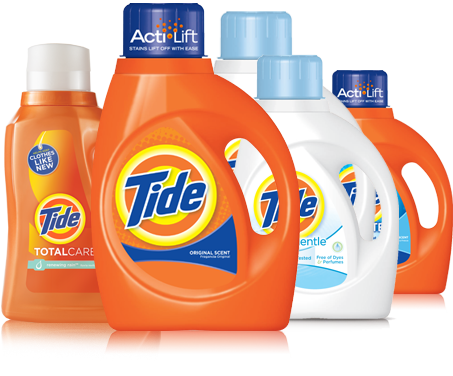
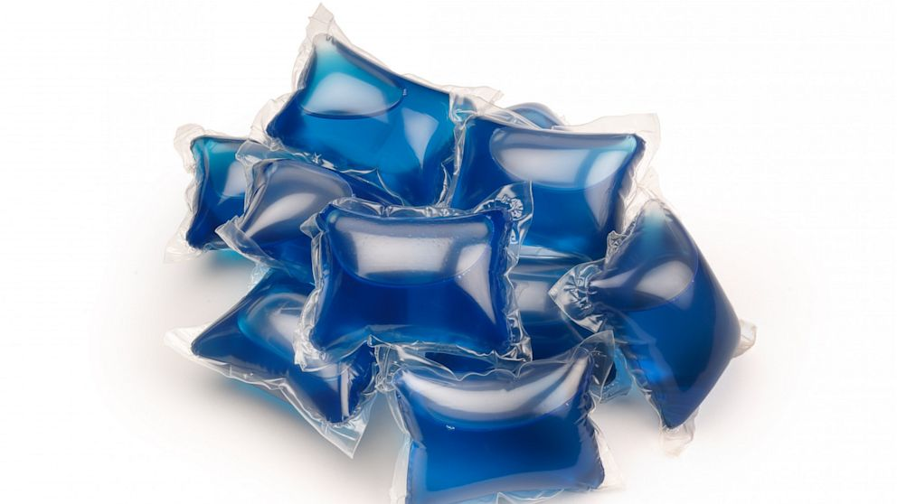

Detergent


General purpose detergents are available in liquid, powdered or single dose form.
All forms of laundry detergent will clean clothes well. However, liquid detergents are very effective on greasy, oily stains and can be easily used as a pretreater. Liquids, powders and single packs can be used in all water temperatures. Both liquid and powder types are available in concentrated or ultra forms. Be sure to read the labels to ensure that you are using the correct amount.
Powdered detergents are usually less expensive to use per load. They are effective on clay and ground-in dirt. Powdered detergents can be problematic if you have extremely cold water or only use cold water for washing because they may not dissolve completely. Always add powdered detergent to the washer drum before clothes and water are added. If you experience problems with residue, mix the detergent with a quart of hot water and add that directly to the washer drum before doing a load of laundry.

Single dose packs are the most convenient and simple to use. But they are the most expensive to use per load and may take two packs to handle really dirty clothes. Single dose packs are pre-measured for an average soil and size load.

If you do large loads of laundry or heavily soiled laundry, you may need to use two.They can also be problematic for households with small children and vulnerable adults because they are often mistaken for candy and can cause poisoning. Learn to use them correctly and safely. Take a look at your family’s needs and that will help you make a decision and using single dose products.